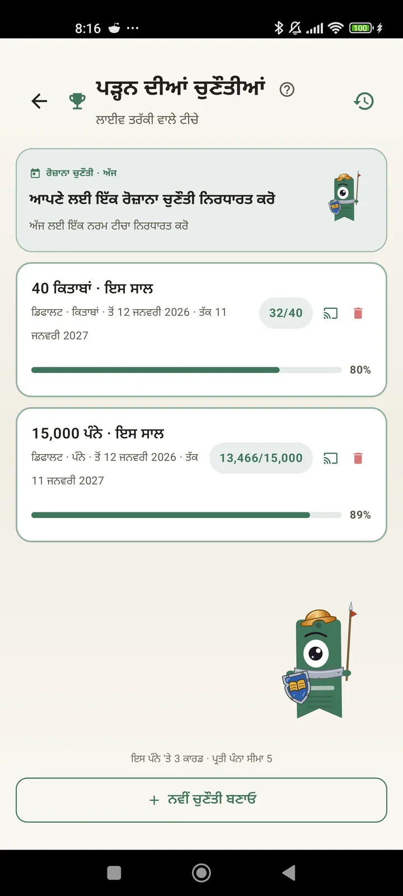

ਇੱਕ ਪਾਠਕ ਵਜੋਂ ਆਪਣੇ ਆਪ ਨੂੰ ਜਾਣੋ
ਚੁਣੌਤੀਆਂ, Bingo, ਵਿਜੇਟਸ ਅਤੇ ਹੋਰ ਫੀਚਰ ਤਾਂ ਜੋ ਤੁਸੀਂ ਆਪਣੀ ਪੜ੍ਹਾਈ ਦਾ ਪੂਰਾ ਲਾਭ ਲੈ ਸਕੋ। 3.7 ਵਿੱਚ ਨਵਾਂ: ਚੁਣੌਤੀਆਂ ਅਤੇ Bingo ਦੇ ਵਿਜੇਟਸ।

ਪੜ੍ਹਨ ਦੀਆਂ ਚੁਣੌਤੀਆਂ
ਪੰਨਿਆਂ, ਸਟ੍ਰੀਕਾਂ ਜਾਂ ਸ਼ੈਲੀਆਂ ਅਨੁਸਾਰ ਟੀਚੇ ਰੱਖੋ। 15 ਤੱਕ ਸਰਗਰਮ ਚੁਣੌਤੀਆਂ ਮੁਫ਼ਤ, Pro ਨਾਲ ਅਸੀਮਤ। ਨਾਲ ਹੀ ਇੱਕ ਰੋਜ਼ਾਨਾ ਚੈਲੇਂਜ ਜਿਸਨੂੰ ਤੁਸੀਂ ਆਪਣੀ ਮਰਜ਼ੀ ਨਾਲ ਬਦਲ ਸਕਦੇ ਹੋ ਅਤੇ ਜੋ ਸੀਮਾ ਵਿੱਚ ਨਹੀਂ ਗਿਣਿਆ ਜਾਂਦਾ।

ਰੋਜ਼ਾਨਾ ਚੈਲੇਂਜ
ਹਰ ਰੋਜ਼ ਇੱਕ ਨਵਾਂ ਟੀਚਾ। ਆਪਣੀ ਸਟ੍ਰੀਕ ਜਾਰੀ ਰੱਖਣ ਲਈ ਅੱਧੀ ਰਾਤ ਤੋਂ ਪਹਿਲਾਂ ਚੈਲੇਂਜ ਪੂਰਾ ਕਰੋ।

ਪੜ੍ਹਨ ਵਾਲਾ Bingo
ਹਰ ਮਹੀਨੇ ਥੀਮ ਵਾਲੇ ਖ਼ਾਨਿਆਂ ਨਾਲ ਦੋ ਨਵੇਂ Bingo। ਕਤਾਰਾਂ, ਕਾਲਮ ਜਾਂ ਪੂਰਾ ਕਾਰਡ ਪੂਰਾ ਕਰੋ।

ਹਫ਼ਤਾਵਾਰ ਸਾਰ
ਹਰ ਸੋਮਵਾਰ, ਤੁਹਾਡੇ ਹਫ਼ਤੇ ਦੀ ਝਲਕ: ਪੜ੍ਹੇ ਪੰਨੇ, ਕੁੱਲ ਸਮਾਂ, ਸਟ੍ਰੀਕ ਅਤੇ ਪਿਛਲੇ ਹਫ਼ਤੇ ਨਾਲ ਤੁਲਨਾ।

ਮਹੀਨਾਵਾਰ ਸਾਰ
ਮਹੀਨਾ ਖ਼ਤਮ ਹੋਣ 'ਤੇ Lecturameter ਉਸਦਾ ਸਾਰ ਦਿੰਦੀ ਹੈ: ਪੰਨੇ, ਸਮਾਂ, ਪੂਰੀਆਂ ਹੋਈਆਂ ਕਿਤਾਬਾਂ, ਦਿਨ-ਬ-ਦਿਨ ਤੁਹਾਡੀ ਰਫ਼ਤਾਰ ਅਤੇ ਮਹੀਨੇ ਦੀ ਤੁਹਾਡੀ ਕਿਤਾਬ।

Bingo ਵਿਜੇਟ Pro
ਇਸ ਮਹੀਨੇ ਦਾ Bingo ਕਾਰਡ, ਹਮੇਸ਼ਾ ਨਜ਼ਰਾਂ ਸਾਹਮਣੇ, ਤੁਹਾਡੇ ਪੂਰੇ ਕੀਤੇ ਖ਼ਾਨਿਆਂ ਅਤੇ ਬਣਾਈਆਂ ਲਾਈਨਾਂ ਨਾਲ।

ਕਿਤਾਬ ਵਿਜੇਟ ਮੁਫ਼ਤ
ਜੋ ਕਿਤਾਬ ਤੁਸੀਂ ਪੜ੍ਹ ਰਹੇ ਹੋ, ਉਸਨੂੰ ਸਿੱਧਾ ਹੋਮ ਸਕ੍ਰੀਨ 'ਤੇ ਦੇਖੋ: ਕਵਰ, ਸਿਰਲੇਖ, ਲੇਖਕ, ਪੰਨੇ ਅਤੇ ਪ੍ਰਗਤੀ ਦਾ ਪ੍ਰਤੀਸ਼ਤ, ਹਮੇਸ਼ਾ ਅੱਪ-ਟੂ-ਡੇਟ। ਜਿੱਥੇ ਚਾਹੋ ਫਿੱਟ ਕਰਨ ਲਈ ਆਕਾਰ ਬਦਲਿਆ ਜਾ ਸਕਦਾ ਹੈ।
ਸੱਚੀਂ ਯਾਰ, ਇਹ ਐਪ ਥੈਰੇਪੀ ਵਰਗੀ ਲੱਗਦੀ ਹੈ। ਮੈਂ ਦਿਨ ਦੇ ਇੱਕ-ਦੋ ਪੰਨਿਆਂ ਤੋਂ ਦਿਨ ਦੇ ਲਗਭਗ 20 ਪੰਨਿਆਂ ਤੱਕ ਪਹੁੰਚ ਗਿਆ ਹਾਂ ਅਤੇ ਹੋਰ ਸੁਧਾਰ ਹੋ ਰਿਹਾ ਹੈਇੱਕ ਯੂਜ਼ਰ ਦੀ ਰਾਏ, ਈਮੇਲ ਰਾਹੀਂ ਭੇਜੀ ਗਈ

ਮਹੀਨਾਵਾਰ ਤੁਲਨਾ Pro
ਐਪ ਖੋਲ੍ਹੇ ਬਿਨਾਂ ਆਪਣੇ ਪਿਛਲੇ ਮਹੀਨਿਆਂ 'ਤੇ ਇੱਕ ਝਾਤ। ਹਰ ਮਹੀਨੇ ਦੇ ਪੰਨਿਆਂ ਦੀਆਂ ਪੱਟੀਆਂ, ਮੌਜੂਦਾ ਮਹੀਨਾ ਉਭਾਰਿਆ ਹੋਇਆ, ਤਾਂ ਜੋ ਤੁਸੀਂ ਇੱਕ ਨਜ਼ਰ ਵਿੱਚ ਜਾਣ ਸਕੋ ਕਿ ਇਸ ਮਹੀਨੇ ਪਿਛਲੇ ਨਾਲੋਂ ਵਧੀਆ ਜਾ ਰਹੇ ਹੋ ਜਾਂ ਮਾੜਾ।

ਚੁਣੌਤੀਆਂ ਵਿਜੇਟ Pro
ਤੁਹਾਡੀਆਂ ਸਰਗਰਮ ਚੁਣੌਤੀਆਂ ਅਤੇ ਉਹਨਾਂ ਦੀ ਪ੍ਰਗਤੀ ਹੋਮ ਸਕ੍ਰੀਨ 'ਤੇ। ਕਿਹੜੀਆਂ ਦਿਖਾਉਣੀਆਂ ਹਨ, ਇਹ ਚੁਣੌਤੀਆਂ ਵਾਲੀ ਸਕ੍ਰੀਨ ਤੋਂ ਚੁਣੋ।